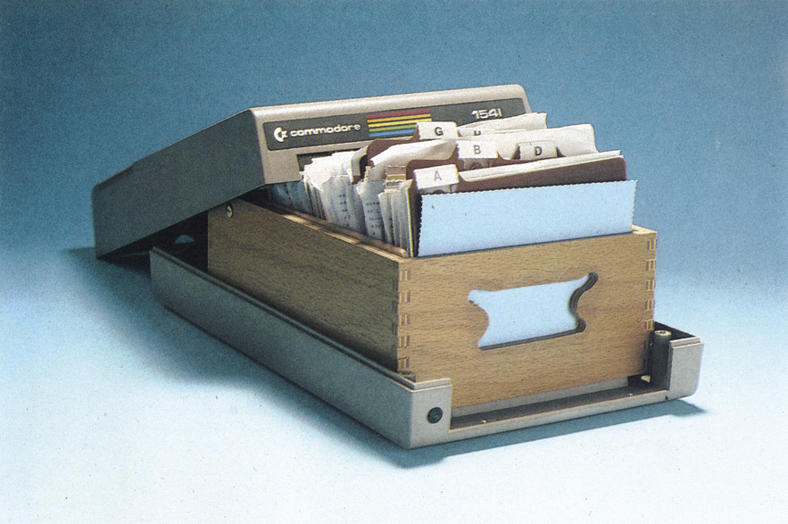

Grundlagen der Dateiverwaltung
Die Verlockung, private Daten, wie zum Beispiel ein Telefon- oder Adressenverzeichnis mit dem C 64 zu verwalten, ist groß. Wir erklären Ihnen leicht verständlich und mit vielen Beispielen, was Sie bei der Programmierung des Floppy-Laufwerks 1541 beachten müssen.

Zum Verständnis dieses Artikels müssen dringend ausreichende Basic-Kenntnisse vorausgesetzt werden. Andernfalls sei der Leser auf unser Sonderheft 7/86 (»Grundwissen«) verwiesen. Dort findet der C 64-Einsteiger alle notwendigen Grundkenntnisse.
In diesem Artikel soll es zwar nur um Dateien des Floppy-Laufwerks 1541 gehen, vorweg jedoch trotzdem noch ein paar allgemeine Informationen zu Datasette, Harddisk und Floppy-Station.
Das Speichern von Daten auf Kassette ist, bei den Geschwindigkeiten der Commodore-Datasetten unrentabel. Weder ist die Datasette fähig, relativ zu adressieren (siehe später), noch ist sie schnell genug, um das Speichern in sequentieller Form lohnend zu machen. Der einzige Vorteil ist die Preislage, in der sich Kassettengeräte im Vergleich zu den Floppy-Laufwerken befinden. Wenn man aber die enormen Nachteile mit den Preisvorteilen vergleicht, so muß man feststellen, daß, zumal man heutzutage bei der richtigen Adresse Disketten zu einem Preis ab drei Mark erhalten kann, sich eine Datasette für jeden ernsteren oder intensiveren Computer-Anwender nicht lohnt. Das ist ein hartes Wort, aber alle Floppy-Besitzer, die schon einmal mit einer Datasette gearbeitet haben, werden mir zustimmen.
Wenn man nun die Harddisks (auch Festplatten-Laufwerke genannt), mit den Floppy-Disk-Laufwerken vergleicht, so wird man feststellen, daß die Harddisks im Vergleich zu der Speicherkapazität der Floppy-Disks (170 KByte) wahrhaft astronomische Größen von mehr als 20 MByte erreichen. Das klingt nun sehr schön, allerdings erreichen auch die Preise solch astronomische Höhen (meist um 2000 bis 3000 Mark). Vorteile einer Harddisk zeigen sich vor allem dann, wenn man sehr große Tabellen und »Daten-Monster« verwalten muß, da dank der parallelen Datenübermittlung und der höheren internen Zugriffszeiten beim Schreiben und Lesen die Geschwindigkeit der Datenübermittlung der der Floppy-Station 1541 weit überlegen ist.
Noch mal einige Worte zu denjenigen, die bis vor kurzem mit der Datasette gearbeitet haben: Zuerst zu den Sekundäradressen: Während es beim Kassettenlaufwerk deren drei gibt (0, 1 und 2 für Lesen, Schreiben und Schreiben mit »Band-Ende kennzeichnen«), gibt es beim Floppy-Laufwerk nur deren zwei (0 und 1) mit derselben Bedeutung wie bei der Kassette. Allerdings sind diese beiden Sekundäradressen bei der Floppy-Station von völlig untergeordneter Bedeutung. Bei Datenzugriff durch den Benutzer wird der Lese- oder Schreibmodus im Filenamen übermittelt. Außerdem kennt die Floppy-Station im Gegensatz zur Datasette mehrere Dateitypen, aber mehr darüber etwas später.
Zuerst möchte ich aufzählen, welche Dateitypen existieren, um nachher näher auf die einzelnen Typen einzugehen. Gleichzeitig werde ich auch Gebrauch und Anwendung der sequentiellen und relativen Dateien etwas näher erläutern.
Es gibt drei Arten von Dateitypen:
- Die sequentiellen Dateiarten
- Die relativen Dateien
- Die Random-Access-Dateien.
1. Sequentielle Dateien
Man bezeichnet diejenigen Dateitypen als sequentiell, bei denen man nur in einer starren Reihenfolge auf die gespeicherten Daten zugreifen kann, und nicht wie bei anderen Dateitypen die Möglichkeit hat, auf das n-te Byte direkt zuzugreifen.
Der Vorteil dieses Dateityps liegt vor allem in der Einfachheit seines Aufbaus, sein größter Nachteil ist die lange Wartezeit, wenn innerhalb der Datei ein bestimmtes Element gesucht werden muß. Vor allem bei sehr großen Dateien kann eine solche Wartezeit sehr unangenehm sein oder gar der Benutzerfreundlichkeit eines Programms schaden.
1.1 Dateiarten
Es existieren als sequentielle Dateitypen die Dateiarten SEQuentiell, USeR und PRoGramm. Sie sind vom Zugriff her alle absolut gleich, nur die Kennung im OPEN-Befehl ändert sich, man benutzt meistens die Anfangsbuchstaben des Filetyps. Man muß darauf achten, daß nur jeweils drei sequentielle Dateien gleichzeitig geöffnet sein können.
Es muß noch mal gesagt werden: Diese drei Dateitypen sind vom internen Aufbau auf der Diskette her absolut gleich, nur im Directory werden sie als unterschiedlich angezeigt. Der Grund ist wohl vor allem, daß diese Files jeweils auch unterschiedlich genutzt werden; zum Beispiel die Programmdateien eben für Programme, sequentielle Dateien hingegen für Benutzer-Daten.
1.2 Zugriff auf sequentielle Dateien
Zuerst einmal die benötigten Basic-Befehle:
— OPEN Kanal, Gerät, Sekundäradresse, "Name, Filetyp (S,P oder U), Modus (R oder W)"
— CLOSE Kanal
— PRINT # Kanal, Text (;)
— INPUT # Kanal, Text
— GET # Kanal, Text
Kanal: Kennzahl für den C 64, vom Benutzer frei wählbar (zwischen 1 und 127)
Gerät: Adresse des Peripheriegerätes (für die Floppy-Station meist 8 oder 9)
Sekundäradresse: Floppy-interne Kanal-Kennzahl (liegt für unsere Zwecke zwischen 1 und 14, muß ungleich 15 sein, da diese den Kommandokanal des Floppy-Laufwerks anspricht).
Name: Der Name des gewünschten Files
Filetyp: Kennbuchstabe, der entscheidet, welcher Dateityp geöffnet werden soll (SEQ, PRG oder USR)
Modus: Ist meistens »R« oder »W«, seltener »A«, für Notfälle »M«.
»W« bedeutet, daß die betreffende Datei zum Schreiben geöffnet werden soll. Wenn sie schon existiert, wird ein »FILE EXISTS ERROR« gemeldet.
»A« erlaubt es, eine sequentielle Datei zum Schreiben zu öffnen. Dabei werden die zu schreibenden Daten an ein schon existierendes File angehängt.
»R« mit diesem Buchstaben eröffnet man eine schon existierende Datei, um sie zu lesen.
»M« Wenn eine Datei nicht ordnungsgemäß geschlossen wurde, so steht im Directory hinter dem Filenamen ein Stern, und diese Datei kann nicht mehr gelesen werden. Um jetzt wenigstens einen Teil der Daten zu retten, muß man das File im Modus M eröffnen und die Daten in ein neues File ablegen.
1.3 Besonderheiten von PRINT # und INPUT #
PRINT #: Bei diesem Befehl darf man nicht vergessen, daß nach jeder Ausgabe, wie auf dem Bildschirm auch, ein CHR$(13), das heißt ein »Return« gesendet wird. Um dies zu vermeiden (wenn man zum Beispiel auf der Diskette Strings zusammensetzen will), muß man nach dem Print-Befehl ein Semikolon setzen, das das Senden eines »Returns« unterdrückt.
INPUT #: Hier müßte man Commodore eigentlich Vorwürfe machen, daß sie einen so nützlichen Befehl so schlecht ausgebaut haben. Er zeigt einige Schwächen, die die Nutzung von Dateien erschweren, und vor allem dem Anfänger Probleme bereiten können. Die eine Schwäche ist die Beschränkung der Länge der ausgelesenen Strings auf etwas mehr als 80 Zeichen, die andere ist die »EXTRA IGNORED«-Fehlermeldung bei bestimmten Satzzeichen. Das Unangenehmste freilich ist, daß der INPUT #-Befehl Stringteile zwischen einem Komma und einem »Return« entweder als selbständige Strings betrachtet, oder aber sie völlig ignoriert!
1.4 Beispiele
1. Beispiel
10 OPEN 2,8,2,"TEST,S,W"
20 OPEN 1,8,15 : INPUT#1,A,B$,C,D : IF A = 0 THEN 40
30 PRINT "FEHLER :" : PRINT A;B$;C;D : CLOSE 2 :CLOSE 1 : END
40 PRINT#2,"DIES IST EIN GANZER SATZ!"
50 CLOSE 2
60 INPUT#1,A,B$,C,D : IF A <> 0 THEN 30
70 PRINT"OK" : CLOSE 2 : CLOSE 1 : END
Erklärung: In Zeile 10 wird auf dem Kanal 2 ein sequentielles File zum Schreiben neu eröffnet.
Dann wird in Zeile 20 der Kanal 1 mit der Sekundäradresse 15 geöffnet. Dies ist der Kommandokanal des Floppy-Laufwerks. Hier wird in der gleichen Zeile auch die Status- oder Fehlermeldung der Floppy-Station ausgelesen. In der Variablen A ist die Nummer der Fehlermeldung gespeichert, 0 bedeutet OK.
Wenn A ungleich 0 ist, also ein Fehler vorliegt, wird in Zeile 30 die Fehlermeldung ausgegeben und das Programm abgeschlossen.
In Zeile 40 wird dann der Text auf Kanal 2 ausgegeben, also in die Datei geschrieben.
Dann wird in Zeile 50 das File geschlossen. Wenn man dies nicht machen, sondern einfach die Diskette aus dem Laufwerk entfernen würde, wäre das File im Directory als fehlerhaft gekennzeichnet und nicht mehr zu gebrauchen.
In Zeile 60 wird wieder der Floppystatus kontrolliert und bei aufgetretenem Fehler in der Zeile 30 ausgegeben.
Zeile 70 schließt einfach den Kommando-Kanal und beendet dieses kleine Programm.
2. Beispiel:
10 OPEN 1,8,1, "TEST,S,R"
20 INPUT#1,A$
30 PRINT A$
40 CLOSE 1 : END
Erklärung: Dieses kleine Programm öffnet unsere sequentielle Datei »TEST« zum Lesen.
In Zeile 10 wird die Datei geöffnet und der Kanalnummer 1 zugewiesen.
Dann wird aus dem Kanal 1 und somit aus unserer Datei ein String gelesen und auf dem Bildschirm ausgegeben.
Anschließend wird Kanal 1 wieder geschlossen. In diesem Fall, beim Lesen einer Datei, ist es eigentlich ungefährlich, die Diskette aus dem Laufwerk zu nehmen, wenn der Kanal noch offen ist (rote LED an der Floppy-Station leuchtet), man sollte aber trotzdem konsequent vorgehen und nicht benötigte Dateien immer mit einem CLOSE schließen.
3. Beispiel:
10 OPEN 2,8,2, "TEST,S,A"
20 PRINT#2, "DAS IST EIN ZWEITER SATZ"
30 CLOSE 2 : END
Erklärung: Dieses Mini-Programm öffnet das File »TEST« im »Append«-Modus. Das heißt, die vorhandenen Einträge in der Datei bleiben erhalten, und die neuen Einträge werden hinten angehängt.
Wenn man jetzt diese Datei wieder auslesen will, dann kann man so vorgehen wie im Beispiel 2, nur müssen jetzt statt einem INPUT #-Befehl zwei ausgeführt werden.
4. Beispiel:
10 OPEN 1,8,1, "LISTING-TEST,U,W"
20 CMD1:LIST
CLOSE 1
Erklärung: Wenn man dieses Programm laufen läßt, »listet« es sich selbst auf Diskette, und kann mit Hilfe des nächsten Beispiels ausgedruckt werden.
In Zeile 10 wird ein User-File zum Schreiben geöffnet, dann werden in Zeile 20 sämtliche Ausgaben des Computers (also auch der LIST-Befehl) zu Kanal 1 umgeleitet und somit auf unsere Datei ausgegeben. Anschließend muß der Kanal 1 im Direktmodus geschlossen werden, da das Programm nach einem LIST automatisch abgebrochen wird.
5. Beispiel:
10 OPEN 2,8,2, "LISTING-TEST,U,R" : OPEN 4,4
20 GET#2,A$:B=ST:PRINT#4,A$;
30 IF B AND 2↑6 <> 0 THEN 20
40 CLOSE 2 : CLOSE 4 : END
Erklärung: Dieses Programm gibt ein Basic-Programm, das auf Diskette mittels CMD gelistet wurde, auf einem Drucker aus.
Zuerst wird in Zeile 10 das File auf Diskette geöffnet, dann der Kanal zum Drucker (Geräteadresse 4).
Jetzt wird in Zeile 20 ein Zeichen aus der Datei geholt, dann der Status in eine andere Variable gerettet und das eine Zeichen ohne »Return« (deshalb das Semikolon nach dem PRINT-Befehl) auf dem Drucker ausgegeben.
Dann wird der gerettete Status auf Bit 6 kontrolliert, und, wenn dieses nicht gesetzt ist, das nächste Zeichen von Diskette geholt. Ist Bit 6 gesetzt, ist das Ende der Datei erreicht, und die Kanäle werden wieder geschlossen.
Noch eine kleine Erklärung zum Status in der Variablen ST: In diesem Status-Byte wird das sechste Bit auf eins gesetzt, wenn das letzte Byte des Files gelesen wurde. Bezeichnenderweise heißt dieses sechste Bit auch EOF (=End of File). Allerdings darf der Anwender nicht vergessen, das Status-Byte sofort nach dem GET oder gegebenenfalls nach einem INPUT in einer Variablen (hier: B) zu retten, da sich der Wert dieses Byte nach einem PRINT-Befehl an die Peripherie (hier: Drucker) auch ändern kann.
2. Relative Dateien
Relative Dateien sind nun etwas ganz anderes, als die vorher behandelten sequentiellen Dateien. Von Ihnen gibt es nur einen Typ – eben relativ, im Gegensatz zu den sequentiellen, wo es eine feinere Unterteilung in einzelne Arten gab.
Da relative Dateien vom C 64-Basic nicht unterstützt werden, müssen alle Kommandos relativ umständlich erfolgen. Die aus dieser Verwaltungsart resultierenden Vorteile überwiegen die vorhandenen Nachteile aber bei weitem.
Man kann eine relative Datei am besten mit einem eindimensionalen Stringfeld vergleichen, wo alle Strings die gleiche Länge haben. So wie man im Speicher diese einzelnen Array-Teile adressieren kann, ist es auch in relativen Dateien möglich, einen bestimmten Datenblock (=Record) zu lesen oder zu schreiben. Das erklärt natürlich, warum diese Dateien als »schnell« bezeichnet werden: Auf einen einzelnen Record, auch wenn er ganz am Schluß der Datei ist, kann sofort zugegriffen werden, da die Floppy-Station intern noch eine Tabelle verwaltet, auf der die genaue Position der Recordanfänge verzeichnet ist.
Noch ein kleiner Tip: Man sollte sich mit diesem Dateityp wirklich nur auseinandersetzen, wenn man unbedingt kurze Zugriffszeiten benötigt und schon etwas Erfahrung im Umgang mit dem Floppy-Laufwerk hat, da, wie gesagt, die Anwendung dieser Dateien doch etwas kompliziert werden kann.
2.1 Zugriff auf relative Dateien
Zum Öffnen einer relativen Datei benutzt man folgenden Befehl:
OPEN 2,8,2, "NAME,L,"+CHR$(40)
Der OPEN-Befehl ist dem der sequentiellen Dateien fast gleich, man darf aber nicht vergessen, daß gleichzeitig immer nur eine relative Datei offen sein kann. Man kann allerdings dann noch eine sequentielle Datei öffnen, was aber später bei der Index-sequentiellen Dateiverwaltung besprochen werden soll.
Zurück zu unserem OPEN: Mit dem L nach dem Namen wird der Floppy mitgeteilt, daß eine relative Datei geöffnet werden soll. Die CHR$-Sequenz teilt dem Laufwerk mit, wie groß ein einzelner Record, ein einzelner Datenblock werden soll (in unserem Beispiel 40 Zeichen lang). Allerdings muß man beachten, daß nach dem ersten Öffnen, also nach dem Initialisieren der Datei, dieser Wert immer gleich bleiben muß. Denn wenn man beim Initialisieren die Datenblöcke für 40 Byte vorbereitet, und dann bei einem späteren Öffnen der Datei mitteilt, daß die Blöcke 80 Byte lang sein sollen, so wird sich das Laufwerk den Prozessor darüber zerbrechen, wie sie 80 Byte in 40 Stellen unterbringen soll. Wenn Sie die Datei zu einem späteren Zeitpunkt wieder benutzen wollen, werden Sie sich wundern, wie es in den einzelnen Records aussieht!
Nach erstmaligem Öffnen der Datei muß diese noch eingerichtet werden, das heißt, Sie müssen der Floppy-Station mitteilen, wieviele Records Sie bis auf weiteres benutzen wollen. Dazu müssen Sie den letzten Datensatz mit einem CHR$(255) markieren, worauf das Laufwerk alle noch nicht benutzten Datensätze selber einrichtet. Das kann eine Weile dauern, darum sollte man dieses Einrichten gleich am Anfang erledigen. Wenn später die Datei erweitert werden soll, muß man einfach den neuen letzten Datensatz einrichten. Nehmen wir an, Sie wollen 300 Records der Länge 40 freigeben:
10 OPEN 2,8,3,"NAME,L,"+CHR$(40)
20 OPEN 1,8,15
30 PRINT#1,"P"+CHR$(3)+CHR$(300 AND255)+CHR$(300/256)+CHR$(1)
40 PRINT#2,CHR$(255)
50 INPUT#1,A:CLOSE 1: CLOSE 2 : END
In Zeile 10 wird, wie schon besprochen, die Datei eröffnet und in Zeile 20 der Kommandokanal, den man zum Positionieren des Records benötigt.
Die Syntax des Positionierbefehls (Zeile 30), den man auf dem Kommandokanal senden muß, lautet wie folgt:
PRINT#Kanal,"P"+CHR$(Sekundäradresse)+CHR$(Lo)+CHR$(Hi)+CHR$(Stelle)
| »P« | Kennzeichen des Positionierbefehls |
| Sekundäradresse: | Sekundäradresse der relativen Datei im Open-Befehl |
| Lo: | niederwertiges Byte der Datensatznummer |
| Hi: | höherwertiges Byte der Datensatznummer |
| Stelle: | Die Nummer des Zeichens innerhalb eines Records (Datensatz), auf das positioniert werden soll. |
Somit wird in Zeile 30 auf das erste Zeichen des Record Nummer 300 positioniert. Die Aufspaltung der Recordadresse in Lo und Hi ist nötig, da mit einem CHR$-Befehl nur Werte zwischen 0 und 255 übergeben werden können, aber durchaus Datensatzadressen der Größe 500 oder 1000 nötig werden können!
In Zeile 40 wird dann ein CHR$(255) auf dem eigentlichen Dateikanal ausgegeben, was die Initialisierung startet.
Zum Schluß wird dann die eventuell blinkende Fehler-LED gelöscht, und beide Kanäle geschlossen.
Dieses Blinken sollte Sie beim Einrichten einer relativen Datei nicht irritieren, es tritt immer dann auf, wenn ein noch nicht existierender Record angesprochen werden soll. Falls die LED beim Einrichten einer größeren Datei überhaupt nicht leuchtet, so sollte Sie das nicht weiter stören, das ist normal.
2.2 Beispiele
1. Beispiel:
10 OPEN 2,8,3,"NAME,L,"+CHR$(40)
20 OPEN 1,8,15
30 PRINT#1,"P"+CHR$(3)+CHR$(1)+CHR$(0)+CHR$(1)
40 PRINT#2,"DAS IST JETZT WIRKLICH EIN LANGER TEXT! ";
50 CLOSE 1 : CLOSE 2 : END
Erklärung: Bei diesem Programm muß eigentlich nur erwähnt werden, daß in Zeile 40 beim PRINT #2 ein Semikolon steht. Wie man oben beim OPEN-Befehl sieht, ist ein Datensatz 40 Zeichen lang, aber mit »Return« wäre der Text in Zeile 40 ganze 41 Zeichen lang!
Wenn man jetzt diesen Text wieder lesen möchte, so muß man notgedrungen mit einer GET-Schleife arbeiten, da bei einem INPUT # bekanntlich ein »Return« gesucht wird.
Wenn man mit INPUT arbeiten möchte, was trotz allem doch noch einige Vorteile bietet, muß man immer darauf achten, daß kein »PRINT« vorkommt und im Record immer genügend Platz für ein »Return« bleibt.
2. Beispiel:
10 OPEN 2,8,3, "NAME,L,"+CHR$(40)
20 OPEN 1,8,15
30 PRINT#1,"P"+CHR$(3)+CHR$(1)+CHR$(0)+CHR$(1)
40 GOSUB 100:PRINT A$
50 CLOSE 1: CLOSE 2 : END
99 :
100 A$="":FOR I = 1 TO 40
110 GET#2,B$:IF B$ =CHR$(255) THEN 130
120 A$=A$+B$:NEXT
130 RETURN
Erklärung: Dieses Programm simuliert eine Art INPUT # in der Subroutine ab Zeile 100. Dort wird die maximale Anzahl zu holender Zeichen in der FOR-NEXT-Schleife festgelegt (gleich der Recordlänge), und dann so lange ein Zeichen nach dem anderen aus dem Record geholt, bis das nächste Zeichen ein CHR$(255) ist: das Leerkennzeichen.
Wenn man einmal einen String von nur 30 Zeichen Länge in einem 40-Zeichen-Record mit einem PRINT #; ablegt, so haben die restlichen zehn Zeichen den Wert 255, was in dieser GET-Routine also statt einem CHR$(13) als Endekennzeichen verwendet wird.
2.3 Index-sequentielle Dateien
Dieser umständliche Name beschreibt etwas eigentlich gar nicht so kompliziertes: Wie schon an verschiedenen Stellen angedeutet, kann man bei der VC 1541 nur eine sehr beschränkte Anzahl Dateien gleichzeitig öffnen; nämlich drei sequentielle Dateien oder eine relative und eine sequentielle Datei.
Diese Möglichkeit, gleichzeitig eine relative und eine sequentielle Datei zu öffnen, ist nun die Voraussetzung zur Index-sequentiellen Datenverwaltung.
Nehmen wir einmal an, Sie wollen ein persönliches Adreßregister mit einem nicht zu kurzen Kommentar zu jeder einzelnen Adresse oder Person aufbauen: Sie können jetzt eine Adresse nach Namen, Wohnort oder Arbeitsort alphabetisch ordnen. Eine sehr aufwendige Methode wäre jetzt, drei komplette relative Dateien aufzubauen, eben eine nach Namen, die nächste nach Wohnort etc. alphabetisch geordnet. Darum werden Sie wohl eher nur eine relative Datei, nach Namen geordnet, aufbauen, dazu aber zwei sequentielle Dateien, in denen nur entweder die Wohnorte oder die Arbeitsorte mit den entsprechenden Record-Nummern des eigentlichen Eintrags aufgeführt sind.
Wenn man jetzt nach eingegebenen Namen suchen will, so tut man das direkt in der relativen Datei und hat somit sofort den richtigen Eintrag. Wenn man aber nach eingegebenem Wohnort sucht, sucht man diesen in der sequentiellen Datei, wo der Eintrag vielleicht so aussieht: »UNTERLUNKHOFEN . . . 0753«. Wie man sieht, gibt es hier maximal 9999 Records und die maximale Länge des Ortes sind 16 Buchstaben. Man sucht also in der Wohnortdatei »Unterlunkhofen«, liest die entsprechende Recordnummer (hier: 753) und findet so den entsprechenden Eintrag in der relativen Datei.
Natürlich muß man nach jeder Änderung der relativen Datei, da diese ja auch neu sortiert werden muß, die entsprechenden sequentiellen Dateien neu aufbauen.
Anmerkung: Es wird wohl besser sein, wenn man auch die Namen der relativen Einträge in einer sequentiellen Datei sortiert hält, da das Umordnen innerhalb der relativen Datei mit den Kommentaren doch sehr mühsam werden kann!
3. Random-Access-Dateien
Dieser Dateityp ist weder relativ noch sequentiell, oder besser gesagt, es kommt ganz darauf an, wie Sie ihn organisieren. Denn Random-Access bedeutet freier Zugriff. Mit anderen Worten: Der Benutzer kann diese Art von Dateien verwalten, wie er will. Es ist nun nicht schwer zu verstehen, daß bei einer so flexiblen Dateienverwaltung das Lesen und Schreiben von Daten sehr umständlich werden kann. Darum wird in diesem Artikel auch nur das Grundsätzliche erläutert.
Nun zur Datenstruktur: Die Daten werden in diesem Fall, anstatt wie bisher in Dateien, direkt in die einzelnen Blöcke auf der Diskette geschrieben. Man muß sich also immer selber merken, wo jetzt welche Daten stehen. Das macht man am besten, indem man auf einem festdefinierten Block eine Tabelle der Adressen der einzelnen Datensätze unterhält. (Oder man legt eine sequentielle Datei an, in der dann diese Tabelle gespeichert ist.) Diese Struktur imitiert also in gewisser Weise die relative Dateiverwaltung der Floppy-Station, ist aber etwas schwerer zu handhaben.
Man kann auch die sequentielle Datenstruktur imitieren, indem man am Anfang oder Ende eines jeden Datenblocks die Adresse des nächsten angibt.
3.1 Zugriff auf Random-Access-Dateien
Zuerst eine Liste sämtlicher neuer Befehle:
PRINT#1, "U1 3 0 X Y"
PRINT#1, "U2 3 0";X;Y
PRINT#1, "B-P 3 X"
PRINT#1, "B-A X Y"
PRINT#1, "B-F X Y"
OPEN 2,8,3,"#"
Man sieht, ganz normales Basic, aber die Anweisungen zwischen den Anführungszeichen sind für den Kommandokanal des Laufwerks bestimmt, und bewirken dort etwas ganz bestimmtes. (Kommandokanal zum Beispiel =OPEN1,8,15.)
U1 3 0 x y: liest den Block (x,y) in den Puffer, der zur Sekundäradresse 3 des Laufwerks 0 gehört.
U2 3 0 x y: schreibt den Block (x,y) aus dem Puffer zur Adresse 3 auf die Diskette.
B-P 3 x: richtet den Zeiger des Puffers mit der Adresse 3 auf das x-te Byte.
B-A x y: sperrt den Block (x,y) in der BAM, der Block kann vor einem »Validate« (PRINT #1,"V") oder einem B-F durch reguläre Dateien oder Programme nicht mehr überschrieben werden.
B-F x y: gibt den Block (x,y) wieder frei.
OPEN 2,8,3,»#«: öffnet den Kanal 2 mit der Sekundäradresse drei als Datenpuffer.
Eine Empfehlung: Im Prinzip gibt es statt U1,U2 die Befehle B-R, B-W, allerdings haben sie gewisse Tücken, die sie für den normalen Benutzer sehr unattraktiv machen.
Vielleicht noch kurz ein Wort zur Blockstruktur auf Diskette:
| Spurnummer: | Anzahl Sektoren: |
|---|---|
| 01-17 | 21 (00-20) |
| 18-24 | 19 (00-18) |
| 25-30 | 18 (00-17) |
| 31-25 | 17 (00-16) |
Warnung: Die Spur 18 ist reserviert, hier befindet sich das Directory und die BAM!
Alle diese Befehle und entsprechenden Fehlermeldungen sind im gewöhnlichen Floppy-Handbuch oder im Floppy-Buch von Markt&Technik besser und ausführlicher erklärt, es würde aber den Rahmen des Artikels sprengen, wollte ich hier alles aufführen.
3.2 Beispiele
Schreiben eines Textes in den Block (1,0) und Sperren des Blocks:
10 OPEN 1,8,15 "I":OPEN 2,8,3,"#"
20 PRINT#1, "B-P 3 0"
30 PRINT#2, "HALLO DU DA!"
40 PRINT#1, "U2 3 0 1 0":REM oder:,"U2";3;0;A;B, wenn A und B die Werte 1 und 0 haben.
50 INPUT#1,A,B$,C,D:IF A <> 0 THEN PRINT A,B$,C,D:CLOSE 1: CLOSE 2 : END
60 PRINT#1,"B-A 1 0"
70 CLOSE 2:CLOSE 1:END
Lesen dieses Textes und Freigeben des Blocks:
10 OPEN 1,8,15,"I":OPEN 2,8,3,"#"
20 PRINT#1, "U1 3 0 1 0"
30 INPUT#1,A,B$,C,D:IF A<>0THENPRINT A,B$,C,D:CLOSE1:CLOSE2:END
40 PRINT#1, "B-P 3 0"
50 PRINT#1, T$:PRINT T$
60 PRINT#1, "B-F 1 0"
70 CLOSE 2:CLOSE 1:END
3.3 Hash-Code-Dateien
Dieser Dateityp beruht auf dem Random-Access-Prinzip und hat noch einen Schuß relativer Datenverwaltung in sich. Wie Sie sicher wissen, gibt es auf einer Diskette 664 frei benutzbare Blöcke, sofern keine Daten auf Diskette gespeichert sind.
Wenn man nun wieder eine Adressenverwaltung aufbauen will und man annimmt, daß keine zwei Einträge gleich lauten, kann man sich vorstellen, daß zum Beispiel die Summe des ganzen Textes (ASCII-Code) direkt die Adresse eines Eintrages darstellt. Es ist klar, daß sich so sehr kurze Suchzeiten (praktisch gleich Null) ergeben, andererseits ist auch nur eine beschränkte Anzahl Einträge verwaltbar.
Noch einmal das Vorgehen: Nehmen wir an, jemand sucht den Eintrag »OTTO«. Die ASC-Summe dieser vier Buchstaben beträgt 326. Die Nummer des Blocks wäre dann (16,11), da 326/21 = 15 Rest 11 ist. Der tatsächliche Block ist nicht (15,11), da es ja keine Spur Null gibt. Man muß also zum Resultat noch 1 dazuzählen. Es wäre auch denkbar, das Zahlenergebnis als Record-Nummer einer relativen Datei einzusetzen.
Dies war das grobe Prinzip der Hash-Datenverwaltung, es bleibt nun dem Leser selbst überlassen, das Konzept zu verfeinern, indem er eine »narrensichere« Adressierungsmethode findet (bei dem vorhergenannten Beispiel gäben die Kombinationen »TOOT«, »STOP« oder »POST« auch den Wert 326!) und zum Beispiel mehrere Datensätze in einem Block erlaubt, indem er nicht 664, sondern 1328 verschiedene »Codes« erkennt und jeweils zwei (gerade-ungerade) im selben Sektor unterbringt.
Mit diesem Artikel hoffe ich, dem Leser das Floppy-Laufwerk um einiges schmackhafter gemacht zu haben, und auch einen kleinen Einblick in die »Welt der Datenverarbeitung« gegeben zu haben.
Noch eine kleine Bemerkung, eine Besonderheit der relativen Dateien auf dem Floppy-Laufwerk 1541: Achten Sie unbedingt darauf, den Record Nummer Null nie zu benutzen. Als ich ihn einmal verwenden wollte, fand ich Teile der Daten dieses Records in den Records eins bis vier, was sich doch etwas störend auswirken kann!
Außerdem sollten Sie, aus ähnlichen Gründen, nie auf das Byte Null eines Records positionieren und dann schreiben oder lesen wollen.
(Germano Caronni/tr)